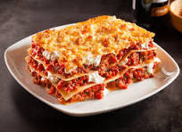

A Lasagna
Lasagna is a classic Italian dish made with layers of wide pasta sheets, rich meat sauce (often including ground beef or sausage), creamy béchamel sauce, and melted cheese, typically mozzarella, ricotta, and Parmesan. This hearty and comforting casserole is baked until bubbly and golden, creating a satisfying and flavorful meal enjoyed by many around the world.
Ingredients
- Lasagna noodles
- Ground beef or Italian sausage
- Tomato sauce
- Ricotta cheese
- Mozzarella cheese
- Parmesan cheese
- Onion
Steps on how to make lasagna
- Cook lasagna noodles according to package instructions.
Brown ground beef or sausage with onion and garlic in olive oil.
Stir in tomato sauce and season with salt, pepper, and Italian seasoning.
- In a separate bowl, mix ricotta cheese with beaten egg and chopped basil (if using).
- Preheat oven to 375°F (190°C).
- In a baking dish, layer noodles, meat sauce, ricotta mixture, and shredded mozzarella and Parmesan cheeses.
- Repeat layers until ingredients are used, ending with a layer of cheese on top.
- Cover with foil and bake for 25-30 minutes.
- Remove foil and bake for an additional 10-15 minutes until cheese is melted and bubbly.
- Let lasagna cool for a few minutes before slicing and serving.